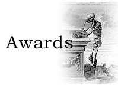

|

GUIDELINES FOR NOMINATION LISABETH M. HOLLOWAY AWARD This distinguished service award for members of the Archivists and Librarians in the History of the Health Sciences was named in honor of Lisabeth M. Holloway who was a founder and who served as president Pro Tem in 1975, and was for many years the editor of The Watermark. The award recognizes significant contributions through leadership and service to ALHHS and the profession. Award Recipients:
Nominations Procedure Nominations should be submitted as a one- to two-page letter describing the nominee's outstanding professional achievements and the impact of his/her contributions on ALHHS and the profession. A current curriculum vitae as well as letter(s) of support (a limit of 2) are not required but provide helpful additional information to the Award Committee. The Committee may also seek additional information on a nominee from the nominator or other sources as needed. Criteria for evaluation:
A nominee cannot be a member of the Committee nor can a Committee member nominate. If no worthy nominations are received, no award will be given. The winner will be announced at the annual meeting of ALHHS. The winner does not need to be present to win. Submit nominations and any accompanying materials to the Chair of the committee by 1 March 2015: Michael Flannery Historical Collections Lister Hill Library University of Alabama at Birmingham 1720 Second Avenue SW Birmingham, AL 35294-0013 For further information, please call the committee chair, Michael Flannery, at (205) 934-4475 or send an e-mail to flannery AT uab.edu.
ALHHS RECOGNITION OF MERIT The ALHHS Recognition of Merit is designed to honor and recognize either members or nonmembers of the organization who made gifts of an extraordinary nature to health sciences libraries. It is awarded irregularly; no more than one award per year may be made. Award Recipient:
There are two categories of recognition: The first category of recognition: individuals, either members or non-members, who make gifts of an extraordinary nature to health sciences libraries. Gifts of magnitude would include, but not be limited, to the following:
The second category of recognition: non-members of ALHHS who have provided long-time excellent service to health sciences libraries. Examples include:
Nominations Procedure Nominations should be submitted as a one- to two-page letter describing the nominee's outstanding scope of donations, for the first category; and his/her achievements and the impact of his/her contributions on health sciences libraries, for the second category. Letter(s) of support (a limit of 2) are not required but provide helpful additional information to the Award Committee. The Committee may also seek additional information on a nominee from the nominator or other sources as needed. A nominee under the first category, if a member of ALHHS, cannot be a member of the Awards Committee. A Committee member cannot also make a nomination. If no worthy nominations are received, no award will be given. The winner will be announced at the annual meeting of ALHHS and presented with an engraved crystal paperweight. The winner is not required to be present. Submit nominations and any accompanying materials to the Chair of the committee by 1 March 2015: Michael Flannery Historical Collections Lister Hill Library University of Alabama at Birmingham 1720 Second Avenue SW Birmingham, AL 35294-0013 For further information, please call the committee chair, Michael Flannery, at (205) 934-4475 or send an e-mail to flannery AT uab.edu.
ALHHS PUBLICATION AWARD The Publication Award, established in 1992, is presented to the author(s) of a monograph, article, or online resource related to the history of the health care sciences, or works on the bibliography, librarianship and/or curatorship of historical collections in the health care sciences. The work must have been published in print or on the web within the three years prior to presentation of the award. At least one principal author of the work must be a member of ALHHS in good standing. Award Recipients:
Archivists and Librarians in the History of Health Sciences (ALHHS) is seeking nominations for the Publication Award. Books, significant articles, catalogs, bibliographies, and electronic resources related to the history of the health care sciences and works on the bibliography, librarianship, and/or curatorship of historical collections in the health care sciences are eligible for consideration. Works must have been published within three years of the award date. Nominated authors must be ALHHS members in good standing. Please present nominations for awards in "Monograph", "Article", or "Online Resource" categories. To nominate a work, please send 3 copies of a printed work (photocopies or PDFs of articles are acceptable) or the URL for an online resource. Please include a cover letter giving the item's complete citation (including all authors, publisher, and publication date). Authors may nominate their own works. The Publication Award will be presented at the annual meeting on April 30, 2015. Winners do not need to be present to win. The deadline for nominations (self-nominations are encouraged) is 1 March 2015. To receive complete information on the nominating process, please contact awards committee chair at james.edmonson AT case.edu or call (216) 368-6391.
James M. Edmonson
ALHHS CURATORSHIP AWARD ALHHS established the Curatorship Award to recognize outstanding individual achievement by a member in the field of medical historical curatorship. Award Recipient:
|